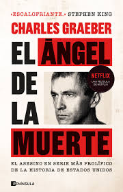

KILLER
El terror de asesinos en serie se centra en personajes que cometen crímenes brutales y sanguinarios. Es uno de los subgéneros más populares del cine y la literatura.
Freddy Krueger invade los sueños de un grupo de adolescentes para asesinarlos mientras duermen.
Cine: Scream
Un asesino enmascarado conocido como Ghostface aterroriza a un grupo de adolescentes.
Cine: American Psycho
Patrick Bateman oculta tras su vida de lujo una personalidad violenta y perturbadora.
Cine: Zodiaco
Basada en hechos reales, sigue la investigación del misterioso asesino del Zodiaco en California.
Libro: La Toffana
La historia de Giulia Tofana, una de las envenenadoras más famosas de la historia.

Libro: El coleccionista
La obsesión de un hombre lo lleva a secuestrar a una joven en una inquietante historia psicológica.

Libro: El ángel de la muerte
Relato basado en la figura de Josef Mengele, conocido por sus crímenes durante la Segunda Guerra Mundial.

Libro: My Heart Is a Chainsaw
Una apasionada del cine slasher cree que los asesinatos de su pueblo siguen el patrón de una película de terror.